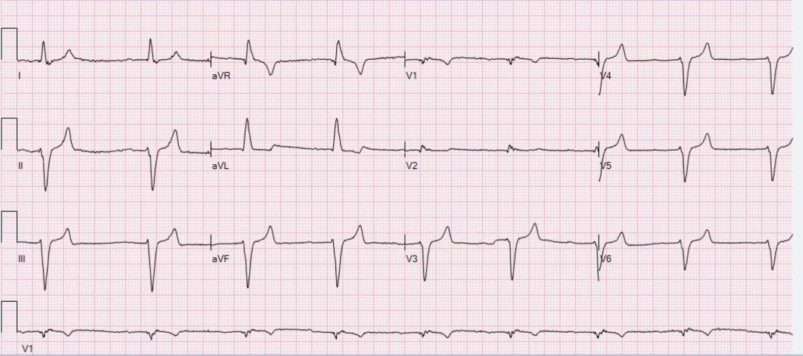
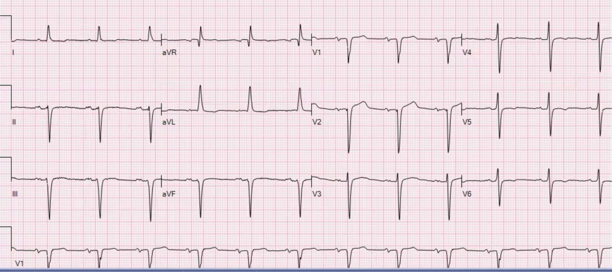
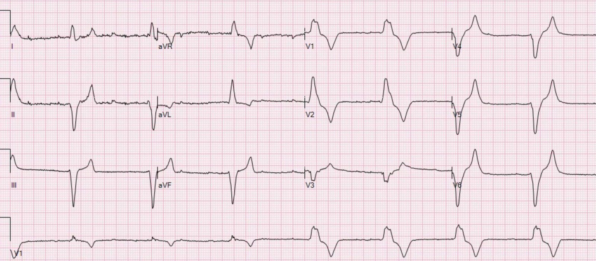
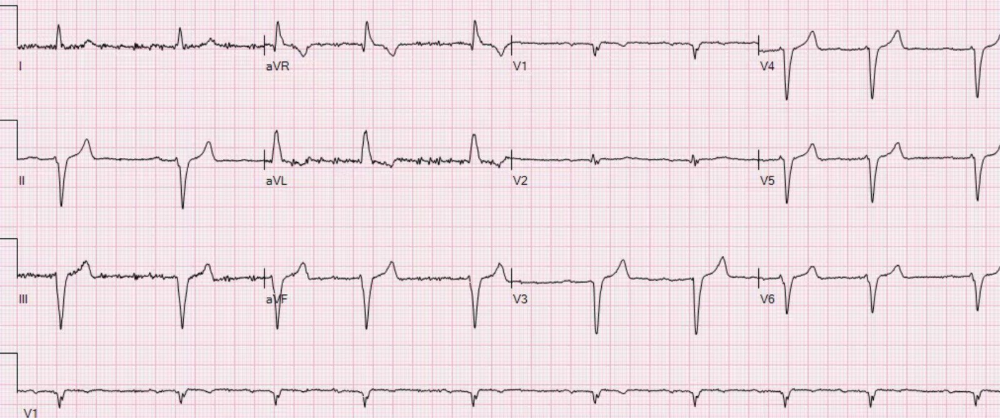
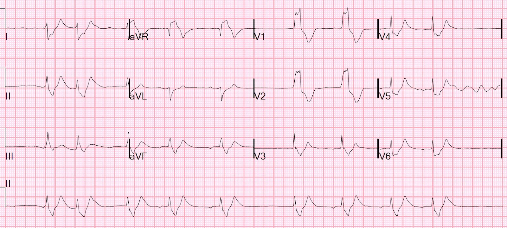
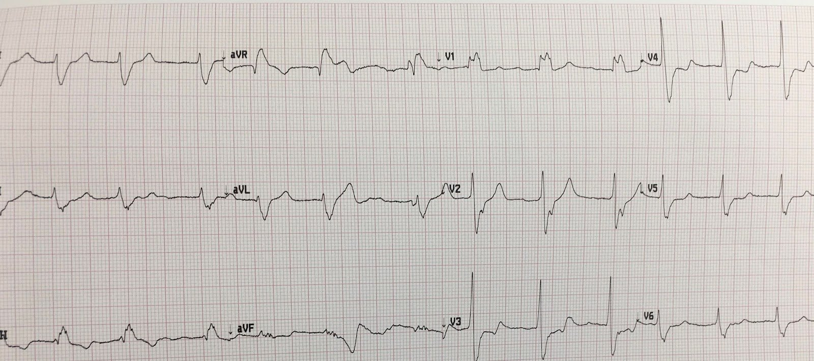
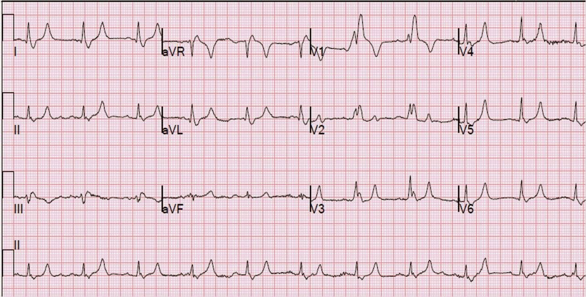
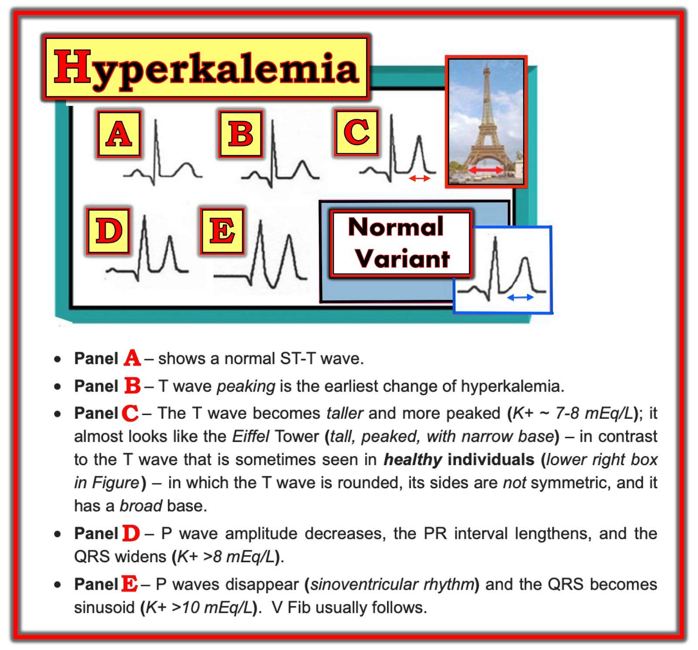
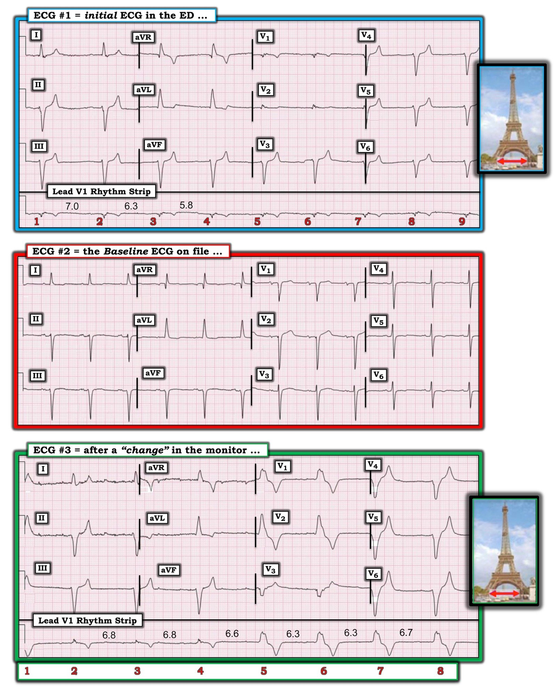

26/01/2020 — Bệnh nhân nữ ở độ tuổi 50 khó thở và nhịp chậm
Bản dịch tiếng Việt của bài "A woman in her 50s with dyspnea and bradycardia" – Dr. Smith’s ECG Blog. Giữ nguyên toàn bộ 11 hình ảnh của bản gốc.
Bài viết của Pendell Meyers
Một bệnh nhân nữ ở độ tuổi 50 đến khám vì khó thở và mệt mỏi nặng dần trong 1 tuần. Các dấu hiệu sinh tồn trong giới hạn bình thường, ngoại trừ nhịp chậm 55 lần/phút.
Đây là điện tâm đồ của bệnh nhân ghi tại khu phân loại (triage):


Đây có lẽ là nhịp chậm xoang với sóng P rất nhỏ/giảm biên độ và khoảng PR kéo dài. QRS khoảng 150 ms, và có hình thái phù hợp với LAFB. Sóng T nhọn. Tất cả các dấu hiệu đều đáng lo ngại là tăng kali máu.
Đây là điện tâm đồ nền có trong hồ sơ:


Khi đó tăng kali máu chưa được nhận ra, và kết quả sinh hóa vẫn đang chờ.
Với chúng tôi, đây rõ ràng là tăng kali máu, và chúng tôi trình bày một chẩn đoán lẽ ra phải hiển nhiên này chỉ vì người ta vẫn tiếp tục bỏ sót nó. Lặp lại. Lặp lại. Lặp lại.
Một điện tâm đồ khác được ghi khi nhận thấy có “thay đổi trên monitor”:


Nửa đầu của điện tâm đồ giống như bản ghi trên, nhưng nửa sau cho thấy phức bộ QRS đột ngột rộng hơn với hình thái RBBB. Đây nhiều khả năng là một nhịp thoát (có thể xuất phát từ nhánh trái - LBB). Độ rộng QRS của các nhát RBBB chỉ hơn 200 msec một chút. Như vậy là quá rộng đối với RBBB thông thường, và cũng gợi ý tăng kali máu hoặc một rối loạn khác gây giãn rộng QRS. Sóng T tối cấp rõ rệt.
Nồng độ kali trả về là 7.8 mEq/L.
Bệnh nhân được điều trị tăng kali máu và đây là điện tâm đồ ghi lại:


Bệnh nhân tiến triển tốt.
Những điểm cần học:
Luôn nghĩ đến tăng kali máu (hyperK) khi có phức bộ QRS rộng và chậm, bên cạnh các hình ảnh khác.
Cực kỳ hiếm khi RBBB có độ rộng QRS lớn hơn 190ms nếu không có ảnh hưởng của tăng kali máu hoặc một bất thường khác gây giãn rộng QRS.
Xem các ca liên quan khác sau đây:
A patient with cardiac arrest, ROSC, and right bundle branch block (RBBB). (Một bệnh nhân ngừng tim, tái lập tuần hoàn tự nhiên – ROSC, và blốc nhánh phải – RBBB.)


Is this just right bundle branch block? (Đây chỉ là blốc nhánh phải thôi sao?)


Is This a Simple Right Bundle Branch Block? (Đây có phải là một blốc nhánh phải đơn thuần?)



===================================
BÌNH LUẬN CỦA TÔI, bởi KEN GRAUER, MD (26/1/2020):
===================================
Dr. Smith’s ECG Blog đã trình bày nhiều không đếm xuể ca tăng kali máu (Xem Bình luận của tôi trong bài ngày 11/12/2018 — và còn nhiều bài khác nữa!). Rõ ràng, nhận diện Tăng kali máu là một trong những thách thức quan trọng nhất mà nhân viên y tế cấp cứu phải đối mặt, vì: i) rối loạn điện giải này có thể đe dọa tính mạng; ii) có một biện pháp điều trị theo kinh nghiệm (tức là calci) có thể cứu sống bệnh nhân, và thường nên được dùng trước khi có xét nghiệm xác nhận tăng kali máu, vì dùng một cách thận trọng thì là an toàn — còn không điều trị kịp thời thì có nguy cơ mất bệnh nhân; và, iii) Không nhận ra tăng kali máu là nguyên nhân gây giãn rộng QRS và/hoặc bất thường sóng ST-T sẽ dẫn bạn đi theo con đường chẩn đoán sai có thể nghiêm trọng.
- ĐIỀU CỐT LÕI: Nhân viên y tế cấp cứu phải là chuyên gia trong việc nhận diện tăng kali máu (và trong việc nhận ra những trường hợp phải đặt chẩn đoán giả định tăng kali máu cho đến khi chứng minh được điều ngược lại — biết rằng trong lúc chờ xét nghiệm xác nhận, họ nên điều trị tương ứng như với tăng kali máu giả định).
Điều này không phải lúc nào cũng như vậy! Tôi được đào tạo vào giữa thập niên 1970. Vào thời đó, số bệnh nhân suy thận sống đủ lâu để được lọc máu ít hơn nhiều. Suy thận giai đoạn cuối (đến mức dễ dẫn đến các đợt tăng kali máu thường xuyên) — đơn giản là không phải một rối loạn thường gặp. Vì vậy, trong những năm đầu sự nghiệp — tôi gặp tăng kali máu ít hơn nhiều.
- Ngày nay, bất kỳ nhân viên y tế nào thường xuyên vào bất kỳ diễn đàn điện tâm đồ quốc tế nào trong số rất nhiều diễn đàn trên internet cũng sẽ thấy rất nhiều ca tăng kali máu được đăng hằng ngày. Chúng ta cần luôn đặt chẩn đoán này ở hàng đầu trong chẩn đoán phân biệt!
Để rõ ràng — tôi đã thêm vào Hình 1 trình tự “kinh điển theo sách giáo khoa” của các dấu hiệu điện tâm đồ gặp ở các mức độ tăng kali máu tăng dần. Dù nhấn mạnh rằng “không phải bệnh nhân nào cũng đọc sách giáo khoa” — tôi thấy việc nắm được các khái quát điện tâm đồ trong Hình 1 là hữu ích.
- ĐIỂM THEN CHỐT (PEARL) #1: Mặc dù ở từng bệnh nhân riêng lẻ — các “quy tắc chung” này về trình tự thay đổi do HyperK+ có thể không được tuân theo chặt chẽ (tức là, Giả sử QRS giãn rộng ở bệnh nhân của bạn xuất hiện trước khi nồng độ K+ huyết thanh ≥ 8 mEq/L) — ở một bệnh nhân cụ thể, trình tự thay đổi điện tâm đồ mà bệnh nhân của bạn biểu hiện có xu hướng nhất quán đến bất ngờ (theo kinh nghiệm của tôi).


ĐIỂM THEN CHỐT (PEARL) #2 — Tôi rất thích hình ảnh tháp Eiffel — và tôi đã dạy phương tiện trực quan này trong nhiều thập kỷ. Giống như tháp Eiffel — sóng T ở các mức độ tăng kali máu tăng dần trở nên cao, nhọn (đỉnh nhọn) với đáy hẹp. Mặc dù bệnh nhân có biến thể tái cực hoặc thiếu máu cục bộ cấp (bao gồm cả hình ảnh sóng T de Winter) thường biểu hiện sóng T nhọn — sóng T trong thiếu máu cục bộ hoặc biến thể tái cực có xu hướng không nhọn bằng sóng T gặp trong tăng kali máu — và đáy của các sóng T đó có xu hướng không hẹp bằng trong tăng kali máu.
- Hãy xem Hình 2 — trong đó, để rõ ràng, tôi đã đưa lại 3 bản ghi đầu tiên trong ca này. BẠN có thấy hiệu ứng tháp Eiffel của sóng T ở điện tâm đồ #1 — và đặc biệt của sóng T ở điện tâm đồ #3 không?


ĐIỂM THEN CHỐT (PEARL) #3 — Theo kinh nghiệm của tôi, “Mọi suy đoán về hình thái QRS đều MẤT HIỆU LỰC” khi có tăng kali máu đáng kể. Ví dụ, ở điện tâm đồ #1 — Dù trục lệch trái rõ rệt — đây không phải là hình ảnh điển hình của LAHB vì: i) các sóng r ở chuyển đạo dưới quá nhỏ; và, ii) hầu như không có lực dương nào ở các chuyển đạo ngực bên (tức là, chỉ có tối đa một sóng r rất nhỏ ở các chuyển đạo V4 đến V6). Vì vậy — tôi ngay lập tức nghi ngờ có điều gì đó khác đang diễn ra!
- Ngoài ra — Mặc dù có sóng R cao ở chuyển đạo V1 của điện tâm đồ #3 — KHÔNG thể nào nhầm hình ảnh này với RBBB vì: i) QRS này ở chuyển đạo V1 vừa không có hình dạng rõ ràng vừa rất rộng (gần 0.20 giây); ii) phức bộ QRS ở điện tâm đồ #3 đã âm hoàn toàn từ chuyển đạo V3, và hầu như vẫn âm hoàn toàn cho đến chuyển đạo V6 (và bạn hầu như không bao giờ thấy điều này trong RBBB); và, iii) hiệu ứng tháp Eiffel đặc biệt rõ ở điện tâm đồ #3 — vì vậy chúng ta nên BIẾT rằng “Mọi suy đoán đều MẤT HIỆU LỰC” về hình thái QRS với một điện tâm đồ như thế này, trong đó lý do khiến QRS giãn rộng gần như chắc chắn là tăng kali máu.
ĐIỂM THEN CHỐT (PEARL) #4 — Theo ý kiến của tôi, không đáng phí thời gian cố xác định chẩn đoán nhịp cụ thể của một nhịp chậm khi có tăng kali máu. Tôi từng mất hàng giờ cố làm việc này — nhưng sau nhiều năm làm như vậy, cuối cùng tôi nhận ra: i) Rằng chẩn đoán nhịp cụ thể hiếm khi khả thi khi có tăng kali máu đáng kể — và, ngay cả khi bạn chẩn đoán được, chẳng hạn Wenckebach — nhiều khả năng là khi dòng dịch chuyển K+ huyết thanh trong/ngoài tế bào thay đổi, nhịp tim cũng sẽ sớm thay đổi; và, ii) Về mặt lâm sàng — chẩn đoán nhịp cụ thể là gì không quan trọng một khi bạn đã nhận ra tăng kali máu cần được điều trị ngay lập tức — vì thường trong vòng vài phút sau khi tiêm calci tĩnh mạch, nhịp “xấu” có lẽ sẽ “biến mất” (thường kèm theo việc tái lập nhịp xoang nhanh đến bất ngờ).
ĐIỂM THEN CHỐT (PEARL) #5 — Những lý do khiến việc đánh giá nhịp khi có tăng kali máu đáng kể rất khó là: i) Khi K+ huyết thanh tăng, biên độ sóng P giảm, và cuối cùng sóng P biến mất (Xem Ô D và E trong Hình 1); và, ii) Khi K+ huyết thanh tăng — QRS giãn rộng.
- Hãy nghĩ một chút xem điện tâm đồ sẽ trông như thế nào NẾU bạn không thể thấy rõ sóng P (hoặc hoàn toàn không thấy sóng P) — và, QRS lại rộng? TRẢ LỜI: Điện tâm đồ sẽ trông như có nhịp thoát thất, hoặc như nhịp là VT nếu tần số tim nhanh hơn.
- Cuối cùng, bệnh nhân có mức độ tăng kali máu ngày càng nặng có thể tử vong — và, VT/VFib là một trong những cơ chế tử vong có khả năng xảy ra. (Xem CA NÀY — trong đó chúng tôi chưa bao giờ biết chắc NẾU QRS rộng là do riêng tăng kali máu, hay do VT gây ra bởi tăng kali máu — dù điều này không quan trọng về mặt lâm sàng, vì trong cả hai trường hợp, điều trị tức thời được lựa chọn đều là calci tĩnh mạch, thứ mà bệnh nhân này đã được dùng).
ĐIỂM THEN CHỐT (PEARL) #6 — Như đã nêu ở trên, khi tăng kali máu tiến triển — biên độ sóng P giảm cho đến khi cuối cùng sóng P biến mất. Điều thú vị là nút xoang thường vẫn có thể truyền xung điện xuống tâm thất, dù có thể không thấy sóng P nào trên điện tâm đồ. Đây được gọi là nhịp xoang-thất (sinoventricular rhythm).
- Hãy xem lại nhịp ở điện tâm đồ #1. Cực kỳ khó biết LIỆU có (hay không có) sóng P trong bản ghi này (tức là, một vài sóng lệch biên độ nhỏ có thể là sóng P dường như hiện diện ở dải nhịp dài chuyển đạo V1 trước các nhát #2 và 4, và có lẽ ở những chỗ khác — hoặc có lẽ không …). Ngoài ra — Lưu ý tính không đều nhẹ nhưng có thật của khoảng R-R trong bản ghi này (tức là, khoảng R-R đầu tiên là 7.0 ô lớn, nhưng sau đó giảm xuống và vẫn hơi không đều). Thay vì AFib — tôi nghi ngờ chúng ta đang thấy nhịp xoang-thất ở điện tâm đồ #1 — kèm một chút loạn nhịp xoang.
ĐIỂM THEN CHỐT (PEARL) #7 — Chúng ta có thể dùng compa đo (calipers) để hỗ trợ đọc nhịp. Tôi đã dùng compa để xác minh tính không đều nhẹ nhưng có thật của nhịp ở điện tâm đồ #1. Điều này có ý nghĩa — vì nhịp xoang-thất không đều nền này từng lúc chậm đủ để cho phép một nhịp thoát thất hơi gia tốc với tần số nhanh hơn một chút chiếm quyền.
- Lưu ý rằng bắt đầu từ nhát #5 ở điện tâm đồ #3 — phức bộ QRS giãn rộng rõ rệt! Điều này không phản ánh RBBB xuất hiện đột ngột (như chúng ta đã bàn trong ĐIỂM THEN CHỐT #3). Bằng chứng ủng hộ thêm rằng nhát #5 thay vào đó đánh dấu sự khởi đầu của nhịp thoát thất — đến từ việc đo các khoảng R-R ở dải nhịp dài chuyển đạo V1. Compa đo giúp việc đo đạc như vậy nhanh, DỄ DÀNG và chính xác. Lưu ý rằng khoảng R-R của nhịp xoang-thất ( = các nhát #2, 3 và 4 ở điện tâm đồ #3) dài hơn (tức là, 6.6 đến 6.8 ô lớn) — so với khoảng R-R của ổ thoát thất hơi gia tốc (đo được 6.3 ô lớn đối với 2 nhát đầu tiên). Như vậy, có một lý do khiến ổ thoát thất chiếm quyền nhịp — đó là ổ thoát thất nhanh hơn một chút so với nhịp xoang-thất nền.
- Vượt ra ngoài phần cốt lõi — BẠN có để ý điều gì xảy ra trước nhát #2 ở dải nhịp dài chuyển đạo V1 của điện tâm đồ #3 không? Không may, phần đầu của dải nhịp này bị cắt mất — nhưng chúng ta CÓ thấy một sóng T rất rộng và sâu (ngay phía trên số #1) cho biết rằng nhát #1 xuất phát từ ổ thoát thất! Lý do nhịp xoang-thất có thể chiếm ưu thế ở các nhát #2, 3 và 4 — là vì khoảng R-R trước nhát #2 ngắn hơn khoảng R-R của ổ thoát thất. Điều này xác nhận rằng sự thay đổi sang QRS rộng hơn nhiều ở dải nhịp của điện tâm đồ #3 là liên quan đến tần số — với ổ thoát thất chiếm quyền khi tần số xoang-thất giảm xuống dưới tần số của ổ thất hơi gia tốc.
ĐIỂM THEN CHỐT (PEARL) #8 — Không thể biết tăng kali máu đang ảnh hưởng bao nhiêu đến độ rộng QRS và hình thái sóng ST-T cho đến khi bạn đưa K+ huyết thanh về bình thường và sau đó GHI LẠI điện tâm đồ! Hiểu được ĐIỂM THEN CHỐT #8 này là quan trọng để đánh giá thiếu máu cục bộ — vì tăng kali máu có thể hoặc giả dạng hoặc che lấp các thay đổi điện tâm đồ do thiếu máu cục bộ!
- Trong ca này — hóa ra hình thái QRS bất thường ở điện tâm đồ #1 thực sự là biểu hiện của LAHB, bất chấp việc các sóng r ban đầu ở mỗi chuyển đạo dưới nhỏ đến mức nào. Chúng ta biết điều này vì điện tâm đồ nền ( = điện tâm đồ #2) cho thấy hình thái QRS gần như giống hệt ở các chuyển đạo dưới (dù QRS hẹp hơn ở bản ghi nền này).
- Dù vậy — hình thái QRS ở hầu như tất cả các chuyển đạo ngực khác biệt đáng kể ở bản ghi nền ( = điện tâm đồ #2) — so với bản ghi ban đầu tại khoa cấp cứu ( = điện tâm đồ #1). Lưu ý cách sóng T nhọn do tăng kali máu ở điện tâm đồ #1 đã che lấp sóng T đảo ngược nông do thiếu máu cục bộ ở bản ghi nền. Tăng kali máu cho thấy hiệu ứng tổng hợp của hình dạng sóng ST-T nền + sóng T nhọn với đáy hẹp do K+ huyết thanh tăng. Chỉ sau khi điều chỉnh tăng kali máu — bạn mới có thể xác định liệu có các thay đổi sóng ST-T do thiếu máu cục bộ hay không.
Chúng tôi xin CẢM ƠN Dr. Meyers vì đã trình bày ca bệnh thực sự thú vị này!